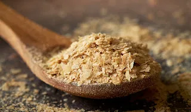

Alimentation & nutrition · 3 min de lecture
La levure de bière
La levure de bière comme complément alimentaire

I. Introduction
A. Définition de la levure de bière
- Micro-organisme unicellulaire du règne des champignons
- Nom scientifique : Saccharomyces cerevisiae
- Utilisée dans la fabrication de la bière et du pain
B. Histoire et origine de son utilisation
- Utilisée depuis l'Antiquité pour la fermentation
- Reconnue pour ses propriétés nutritionnelles au début du 20e siècle
- Popularisée comme complément alimentaire dans les années 1960
II. Composition nutritionnelle
A. Protéines et acides aminés
- Contient 16 acides aminés différents
- Source complète de protéines végétales (40-50% de son poids sec)
B. Vitamines du groupe B
- Riche en B1, B2, B3, B5, B6, B9 (acide folique)
- Excellente source naturelle de B12 (rare dans les aliments végétaux)
C. Minéraux et oligo-éléments
- Riche en sélénium, chrome, zinc, fer, magnésium, potassium
- Bonne source de phosphore et de calcium
D. Fibres
- Contient des bêta-glucanes, fibres solubles bénéfiques pour la santé digestive
III. Bienfaits pour la santé
A. Soutien du système immunitaire
- Les bêta-glucanes stimulent l'activité des cellules immunitaires
- Le sélénium et le zinc renforcent les défenses naturelles
B. Amélioration de la santé digestive
- Favorise l'équilibre de la flore intestinale
- Peut soulager les troubles digestifs (ballonnements, constipation)
C. Effets bénéfiques sur la peau, les cheveux et les ongles
- Les vitamines B et le zinc contribuent à une peau saine
- Peut améliorer la croissance et la qualité des cheveux et des ongles
D. Soutien du système nerveux
- Les vitamines B sont essentielles au bon fonctionnement du système nerveux
- Peut aider à réduire les symptômes de dépression et d'anxiété
E. Potentiel anti-stress et anti-fatigue
- Riche en vitamines B et en minéraux qui combattent la fatigue
- Peut améliorer l'énergie et la vitalité
IV. Utilisation au quotidien
A. Formes disponibles
- Poudre : facile à incorporer dans les aliments
- Comprimés : pratiques pour une consommation régulière
- Flocons : texture agréable, idéals pour saupoudrer
B. Dosage recommandé
- Généralement entre 1 à 3 cuillères à café par jour (3-9g)
- Peut varier selon la forme et la concentration du produit
C. Intégration dans l'alimentation
1. Saupoudrage sur les aliments
- Sur les salades, pâtes, riz, légumes
2. Incorporation dans les smoothies
- Ajoute des nutriments sans altérer significativement le goût
3. Utilisation dans les recettes de cuisine
- Dans les sauces, soupes, pâtes à tarte, pain maison
V. Précautions et contre-indications
A. Allergies et intolérances
- Déconseillée aux personnes allergiques aux levures
- Peut provoquer des troubles digestifs chez les personnes sensibles
B. Interactions médicamenteuses potentielles
- Peut interagir avec certains antidépresseurs (IMAO)
- Prudence recommandée avec les traitements antifongiques
C. Effets secondaires possibles
- Ballonnements et gaz intestinaux au début de la prise
- Risque de maux de tête ou de migraines chez certaines personnes
VI. Conseils pour choisir un bon produit
A. Critères de qualité
- Vérifier la pureté du produit (absence d'additifs inutiles)
- Préférer les levures non enrichies artificiellement
- Opter pour des levures inactivées pour éviter les troubles digestifs
B. Labels et certifications à rechercher
- Label Agriculture Biologique
- Certifications de qualité (ISO, GMP)
- Mention "sans OGM" pour les produits non bio
lien vers Amazon
VII. Conclusion
A. Récapitulatif des avantages
- Source concentrée de nutriments essentiels
- Nombreux bienfaits potentiels pour la santé
- Facile à intégrer dans l'alimentation quotidienne
B. Importance d'une utilisation raisonnée
- Respecter les dosages recommandés
- Consulter un professionnel de santé en cas de doute
- La considérer comme un complément à une alimentation équilibrée, non comme un substitut
Les liens ci-dessus sont des liens d'affiliation. En
utilisant le lien pour effectuer un achat, vous soutenez ce blog tout en
bénéficiant des bienfaits de ce super-aliment. Merci pour votre soutien!
Les informations présentes sur Bien et Etre sont fournies à titre informatif
uniquement. Elles ne constituent ni des conseils médicaux ni des prescriptions.
Avant de faire tout changement dans votre régime alimentaire ou votre routine
d'exercice, veuillez consulter un professionnel de santé qualifié. Votre bien-être
est notre priorité, et il est important d'obtenir des conseils personnalisés et
appropriés de la part de votre médecin.
Guides, outils gratuits et livres pour prendre soin de toi au quotidien.
Découvrir les produits Chest0